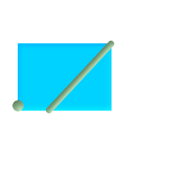

名前
ST_Envelope — ジオメトリのバウンディングボックスを表現するジオメトリを返します。
概要
geometry ST_Envelope(geometry g1);
説明
与えられたジオメトリの倍精度浮動小数点数 (float8)の最小バウンディングボックスをジオメトリで返します。ポリゴンはバウンディングボックスの角のポイントで定義されます ((MINX, MINY), (MINX, MAXY), (MAXX, MAXY), (MAXX, MINY), (MINX, MINY))。(PostGISはZMIN/ZMAXも追加します).
縮退する場合 (縦のライン、ポイント)はPOLYGONより低い次元のジオメトリ、すなわちPOINTまたはLINESTRINGを返します。
Availability: 1.5.0 挙動が変更され出力がfloat4からfloat8になりました。
 This method implements the OGC Simple Features
Implementation Specification for SQL 1.1. s2.1.1.1
This method implements the OGC Simple Features
Implementation Specification for SQL 1.1. s2.1.1.1
This method implements the SQL/MM specification. SQL-MM 3: 5.1.15
例
SELECT ST_AsText(ST_Envelope('POINT(1 3)'::geometry));
st_astext
------------
POINT(1 3)
(1 row)
SELECT ST_AsText(ST_Envelope('LINESTRING(0 0, 1 3)'::geometry));
st_astext
--------------------------------
POLYGON((0 0,0 3,1 3,1 0,0 0))
(1 row)
SELECT ST_AsText(ST_Envelope('POLYGON((0 0, 0 1, 1.0000001 1, 1.0000001 0, 0 0))'::geometry));
st_astext
--------------------------------------------------------------
POLYGON((0 0,0 1,1.00000011920929 1,1.00000011920929 0,0 0))
(1 row)
SELECT ST_AsText(ST_Envelope('POLYGON((0 0, 0 1, 1.0000000001 1, 1.0000000001 0, 0 0))'::geometry));
st_astext
--------------------------------------------------------------
POLYGON((0 0,0 1,1.00000011920929 1,1.00000011920929 0,0 0))
(1 row)
SELECT Box3D(geom), Box2D(geom), ST_AsText(ST_Envelope(geom)) As envelopewkt
FROM (SELECT 'POLYGON((0 0, 0 1000012333334.34545678, 1.0000001 1, 1.0000001 0, 0 0))'::geometry As geom) As foo;

ポイントとラインストリングの最小バウンディングボックス
SELECT ST_AsText(ST_Envelope(
ST_Collect(
ST_GeomFromText('LINESTRING(55 75,125 150)'),
ST_Point(20, 80))
)) As wktenv;
wktenv
-----------
POLYGON((20 75,20 150,125 150,125 75,20 75))